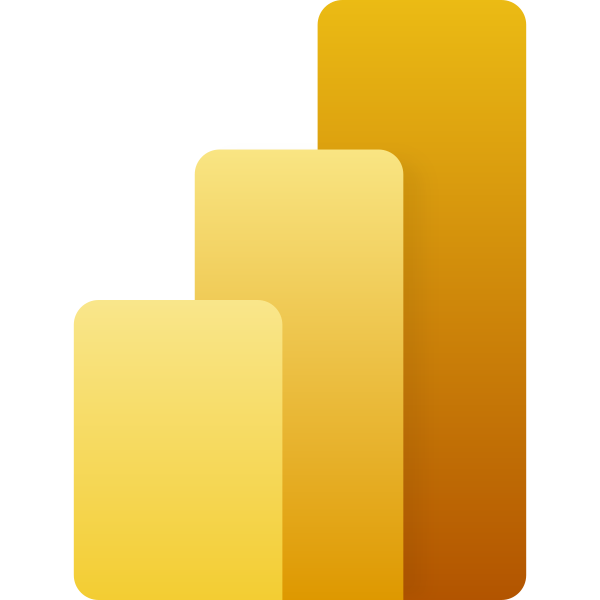
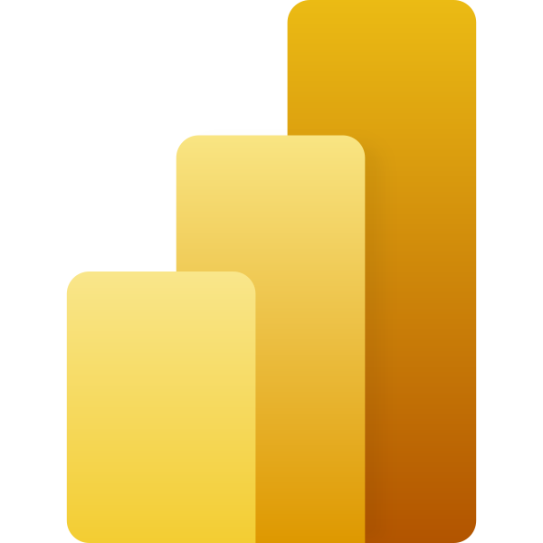
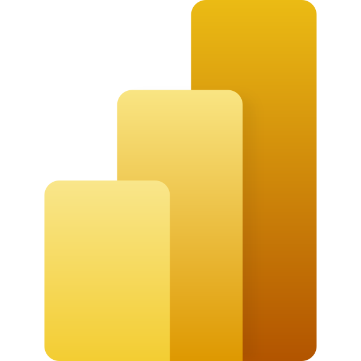

Себастьян Перейера
Автоматизую і візуалізую все, що можна. А інше — теж спробую.

Дивитися приклади →
Excel VBA · Google Apps Script · Power BI DAX · Автоматичні звіти · Кастомна логіка · Кодування для бізнесу · Формули, що думають · Індивідуальні рішення · Excel, якого ви ще не бачили —
 
